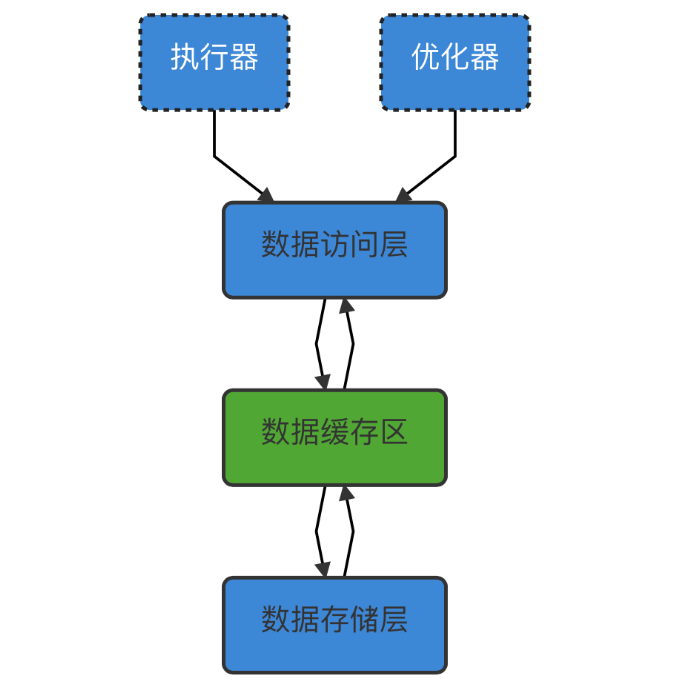
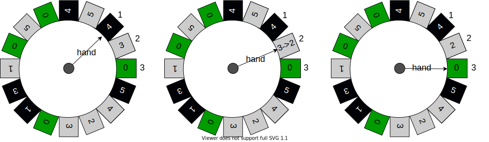

PostgreSQL 缓存详解
缓存（buffer）是用于速度不匹配的组件之间提高数据吞吐率的技术，在硬件设计、软件系统中都有着广泛的使用，例如常见的 CPU 缓存，数据库缓存，缓存服务（redis, memcached）以及浏览器缓存等等。
在数据库系统中的读写操作，都是针对内存中的数据，磁盘中的数据必须在处理前加载到内存，也就是数据库缓存中。利用内存充当慢速磁盘与快速 CPU 之间的桥梁，从而加速 I/O 的访问速度。
PostgreSQL 数据库实现了高效的缓存管理。在这篇文章中我们详细介绍共享缓存的组织结构，实现原理以及基本的使用。
0. 示例
首先，让我们通过下面一个简单的示例来看一下缓存。
-- shared_buffers 配置为默认的 128MB
create table seq(id int);
insert into seq select generate_series(1, 1000000);
EXPLAIN (analyze on, buffers on, costs off, timing off) select * from seq;
QUERY PLAN
-----------------------------------------------
Seq Scan on seq (actual rows=1000000 loops=1)
Buffers: shared hit=4425
Planning Time: 0.046 ms
Execution Time: 84.642 ms
(4 rows)
-- 重启数据库后，第一次查询
EXPLAIN (analyze on, buffers on, costs off, timing off) select * from seq;
QUERY PLAN
-----------------------------------------------
Seq Scan on seq (actual rows=1000000 loops=1)
Buffers: shared read=4425
Planning Time: 0.179 ms
Execution Time: 69.760 ms
(4 rows)
-- 第二次查询
EXPLAIN (analyze on, buffers on, costs off, timing off) select * from seq;
QUERY PLAN
-----------------------------------------------
Seq Scan on seq (actual rows=1000000 loops=1)
Buffers: shared hit=32 read=4393
Planning Time: 0.024 ms
Execution Time: 69.695 ms
(4 rows)
- shared read: 表示从磁盘读取了多少页面
- shared hit：表示缓存命中了多少页面，不需要从磁盘读取
1. 结构
在 PostgreSQL 中，涉及的内存类型比较多，但是可以分成两大类：本地内存和共享内存。

进程本地内存：
- temp_buffers: 每个数据库会话使用的最大临时缓存，用于访问临时表。
- work_mem: 查询操作(例如排序或哈希表)可使用的最大内存容量。
- maintenance_work_mem: 维护操作如 VACUUM、创建索引，修改表等使用的本地内存。
共享内存：
- shared_buffers: 用于缓存数据（内部使用 NBuffers 表示）。
- wal_buffers: 用于还未写入磁盘的 WAL 日志的共享内存大小。
- CLOG buffers: 保存提交日志中的事务状态的缓存（不可配置，通过 NBuffers 计算获得）。
数据组织
PostgreSQL 缓存管理器分成三层结构：哈希表、缓存描述符和缓存池，如下图所示：

1. 缓存哈希表
存储页面和元数据的缓存描述符之间的映射关系。
// 哈希表中的 key
typedef struct buftag
{
RelFileNode rnode; // 表示物理文件
ForkNumber forkNum; // 表示分叉号（-1：无效，0：MAIN，1：FSM，2：VM）
BlockNumber blockNum; // 页面块号
} BufferTag;
// 哈希表中的 key-value 结构
typedef struct
{
BufferTag key; // 磁盘页的 key
int id; // Buffer ID
} BufferLookupEnt;
2. 缓存描述符
缓存描述符是一个对缓存池的描述数组，每个描述符与缓存位置有一对一的关系。类似于每个 8KB 页面的头部，但是这个结构仅存在于内存中，并且与缓存池是分离的。
typedef struct BufferDesc
{
BufferTag tag; /* ID of page contained in buffer */
int buf_id; /* buffer's index number (from 0) */
pg_atomic_uint32 state; /* state info */
int wait_backend_pid; /* backend PID of pin-count waiter */
int freeNext; /* link in freelist chain */
LWLock content_lock; /* to lock access to buffer contents */
} BufferDesc;
state 由下面的三个字段组合而成，主要目的是将多个字段存到一个 32bit 长的字段中，可以通过原子操作 CAS 进行修改，不需要对 buffer 加锁。
+-------------------+-------------+--------------------------+
| 10 bit | 4 bit | 18 bit |
+-------------------+-------------+--------------------------+
| flags | usage_count | ref_count |
+-------------------+-------------+--------------------------+
- flags：标记 buffer 的状态
- usage_count：使用次数，标记被访问的次数，用于 buffer 替换算法
- ref_count：引用计数，当前 buffer 被多少个后端进程 pin（buffer 正在被使用，不能被替换出去）
flags 标记状态如下：
#define BM_LOCKED (1U << 22) /* buffer header is locked */
#define BM_DIRTY (1U << 23) /* data needs writing */
#define BM_VALID (1U << 24) /* data is valid */
#define BM_TAG_VALID (1U << 25) /* tag is assigned */
#define BM_IO_IN_PROGRESS (1U << 26) /* read or write in progress */
#define BM_IO_ERROR (1U << 27) /* previous I/O failed */
#define BM_JUST_DIRTIED (1U << 28) /* dirtied since write started */
#define BM_PIN_COUNT_WAITER (1U << 29) /* have waiter for sole pin */
#define BM_CHECKPOINT_NEEDED (1U << 30) /* must write for checkpoint */
#define BM_PERMANENT (1U << 31) /* permanent buffer */
3. 缓存池
缓存池是一个数组。每个位置存储一个页面(8KB)，比如表和索引的一个完整的页面。
模块间关系
模块间的关系主要介绍后端进程访问数据缓存时涉及的模块。
- 数据访问层：使用缓存的上层代码：
src/backend/access，这一层主要是数据库引擎中对于数据的逻辑使用的层次，如用户查询数据，数据通过索引被访问到，索引不是直接从存储介质上请求 IO，而是从数据缓存层中读取，如果缓存中没有，则由缓存层负责向底层（数据存储层）获取相应的数据。参考：ReadBuffer。 - 数据缓存区：在数据存储层与数据库访问层之间，是一个重要的模块，起着关联内外存储介质的作用，在访问时，PG 将表和索引中的页面从持久化存储加载到共享数据缓存中，然后直接对它们进行操作。写数据实际是改写缓存区，然后把缓存区标记为 “Dirty”，在必要的时候（替换：如缓存区满需要新的缓存区、CheckPoint：系统做检查点时刷出内存的脏数据等，bgwriter：周期性地少量页面刷写）被刷出缓存（写被修改的数据到外存文件）。
- 数据存储层：位于数据缓存区的下层代码：
src/backend/storage/smgr，主要是数据库的存储层，直接和存储介质交互（实际是和 OS 的 IO 调度交互）。参考：ReadBufferExtended函数及其调用的ReadBuffer_common函数，可能涉及smgrread调用，数据缓存层发现缓存中没有对应的数据可以向数据访问层提供，则缓存管理器直接向数据存储层请求进行 IO，使得数据能够被读到缓存中。

进程间关系
postmaster
负责调用缓存管理中的接口申请共享缓存区。
CreateSharedMemoryAndSemaphores
InitBufferPool
// 创建哈希表
// 创建缓存描述符数组
// 创建缓存池数组
backend
每个客户端连接到数据库之后，就会有一个后端进程提供服务，用于处理 SQL 消息，后端进程通过缓存管理器提供的接口访问缓存。
heap_fetch
buffer = ReadBuffer(tag)
LockBuffer(buffer, BUFFER_LOCK_SHARE);
// ……
LockBuffer(buffer, BUFFER_LOCK_UNLOCK);
ReleaseBuffer(buffer);
bgwriter
后台进程，周期性将少量脏页面刷到磁盘中。参考接口 BgBufferSync()。
checkpoint
后台进程，周期性触发，每次触发会将全部脏页面刷到磁盘中，参考接口 BufferSync()。
2. 原理
分配
- 当后端进程读取页面时，调用 BufferAlloc 来加载对应的页面。
- 如果页面已经被缓存，它就会被 pin，然后返回。
- 如果页面没有被缓存，必须找到一个新缓存位置来保存请求的页面。
- 如果有可用的缓存，则将待读取的页面加载到可用的缓存中。
- 如果没有可用的缓存，则找到一个缓存位置进行替换。
- 如果待替换的页面是脏的，需要被写出到磁盘中。
- 将请求的页面读取到缓存中。
替换
缓存的大小有限，当缓存被用满时，哪些数据应该被清理出去，哪些数据应该被保留？这就需要缓存替换策略来决定。常见的策略有：先进先出策略 FIFO（First In，First Out）、最少使用策略 LFU（Least Frequently Used）、最近最少使用策略 LRU（Least Recently Used），CLOCK 等。
LRU（最近最少使用）：
- 最近访问最频繁页面在接下来被使用的概率很高。
- 虽然LRU在理论上可以提供接近最佳的性能，但在实践中实现起来代价很高（哈希表，队列）。
- 读取 buffer 会触发元素的移动。
- 执行顺序扫描可能会在每次访问时需要从物理磁盘上读取页面
-->4->3->2 <-- read(p1), 页面2被替换出去
-->1->4->3 <-- read(p2), 页面3被替换出去
-->1->2->4 <-- read(p3), 页面4被替换出去
-->1->2->3
PG 使用了 clock sweep 算法。
clock sweep 算法示意图如下：（其中，黑色:pin 灰色:unpin 绿色:可以被替换）

- 获取下一个待替换（hand：nextVictimBuffer）的缓存 ID
- 如果缓存没有被 pin，则进入步骤3，否则进入步骤4
- 如果缓存的使用计数 = 0，则返回这个缓存 ID；如果缓存的使用计数 > 0，则将对应缓存的使用计数-1
- 将待替换的缓存 ID 移动到下一个描述符（如果超过 NBuffers，则转换为 0），继续 步骤1
注：使用计数 (usage_count) 最大值是5。
ring
顺序扫描可能将缓存中数据都替换出去（缓存污染）。通过缓存环（buffer ring）特性来解决这个问题。
- 重复使用缓存的一个子集，一旦 ring 已满，循环使用一个前面使用过的页面
- buffer ring 特性降低了顺序扫描、VACUUM 和批量写入的缓存消耗
顺序扫描
- 使用 32 * 8KB = 256KB ring 。这个空间足够小，可以在 L2 中缓存，这使得页面从操作系统缓存传输到共享缓存的效率更高。甚至更少也足够了，但 ring 必须足够大，以容纳扫描中同时固定的所有页面。
- 当扫描读取的数据的大小超过缓冲区的四分之一时，才会启用 ring。
- 如果 ring 缓存区被写入并且更新了 LSN，在这种情况下，我们从 ring 中丢弃缓存区，然后（稍后）使用正常的时钟扫描算法选择替换缓存区。
- 该策略最适合只读的扫描（或者更新hint bit）。
VACUUM
- 像顺序扫描一样使用 256KB 的 ring ，但是脏页不会从 ring 中删除。
- 如果需要，WAL 会被刷新，让缓存区可以重用。
批量写入
- 使用 16MB 的 ring 大小。
- 当前支持 COPY FROM，CREATE TABLE AS，ALTER TABLE，CREATE MATERIALIZED VIEW 以及 REFRESH MATERIALIZED VIEW。
- 较小的 ring 会导致写阻塞太频繁。
不支持 UPDATE/DELETE 使用 ring：在更新相关的页面的扫描中，如批量 UPDATE 或 DELETE， ring 中的缓存总是被弄脏，并且 ring 策略有效地退化为正常的替换策略。
同步
哈希表同步
- 哈希表示全局对象，使用读写锁控制哈希表的访问
- 通过分区来降低哈希表的同步开销
- 当前使用 128 个分区锁
- 参考：BufMappingPartitionLock
pin：
-
pin 用于标记当前的缓存正在被使用，不能被替换出去
-
一个后端进程可以同时持有多个页面的 pin
- pin 不能跨事务边界持有
- 参考：PinBuffer 和 UnpinBuffer
content_lock：
- 每个缓存都有一个读写锁在保护，通过 buffer id 就可以获取
- 读取时，需要先加 pin，然后再加读锁
- 更新时，需要先加 pin，然后再加写锁
- 通过 LockBuffer 加锁解锁
buffer header lock
- 在修改缓存头部时，都需要获取它的头部锁。是一个自旋锁
- 头部锁由
BM_LOCKED标记位表示 - 通过 LockBufHdr 加锁，通过 UnlockBufHdr 解锁
io_in_progress_lock
- 用于等待缓存区上的 I/O 完成，是读写锁
- 参考：BufferDescriptorGetIOLock，StartBufferIO，TerminateBufferIO 等
buffer_strategy_lock
- 用于保护freelist（单链表，初始空缓存，删除表之后的空闲缓存保存在这里）
- 用于保护缓存替换时的操作
- 是一个自旋锁
- 参考：StrategyGetBuffer
3. 使用
视图：缓存命中率
-- 重置计统计计数
SELECT pg_stat_reset();
EXPLAIN (analyze on, buffers on, costs off, timing off) select * from seq;
-- 缓存命中率
SELECT heap_blks_hit, heap_blks_read, heap_blks_hit*1.0/(heap_blks_hit+heap_blks_read) hit_radio
FROM pg_statio_user_tables WHERE relname='seq';
heap_blks_hit | heap_blks_read | hit_radio
---------------+----------------+------------------------
97350 | 4425 | 0.95652173913043478261
(1 row)
-- 索引缓存命中率
SELECT idx_blks_read, idx_blks_hit, idx_blks_hit*1.0/(idx_blks_hit+idx_blks_read) hit_radio
FROM pg_statio_user_indexes WHERE relname = 'seq';
idx_blks_read | idx_blks_hit | hit_radio
---------------+--------------+------------------------
4 | 12 | 0.75000000000000000000
(1 row)
参数：shared_buffers
-
PG 使用双缓存：PG自身的 shared_buffers 以及操作系统内核缓存。
-
参数 shared_buffers 用于配置数据库申请的共享缓存池大小。默认值 128MB。
-
一般来说，对于专用的数据库服务器，shared_buffers 的值应该大约占整个系统内存的 25%。
-
为什么 Aurora 的 PostgreSQL 将 shared buffers 设置为可用内存的 75%?
对于 RDS DB 实例，DB 参数组的默认值设置为总内存的 25%。但是 Aurora DB 实例，参数默认值设置为总内存的 75%。这是因为：Aurora PostgreSQL 使用了共享存储，SQL 层不再保存数据，所以消除了双缓存，不再使用文件系统缓存。
参数：effective_cache_size
- 设置优化器对一个单一查询可用的有效磁盘缓存区大小的一个预设值。
- 它只是一个优化器参数，这个参数并不会实际分配内存，而是告诉优化器可用的缓存的大小。
- 这个参数会被考虑在使用一个索引的代价估计中，更大的值会使得索引扫描更可能被使用，更低的数值会使得顺序扫描更可能被使用。默认值是 4GB。
- 将 effective_cache_size 设置为内存的 50% 比较常见。更激进的设置大约是物理内存的 75%。
插件：pg_buffercache
PG 自带插件 pg_buffercache 提供了一个视图，用于获取每个缓存的信息，例如：
-- 查询占用缓存最多（TOP10）的关系
SELECT c.relname, count(*) AS buffers FROM pg_class c
INNER JOIN pg_buffercache b ON b.relfilenode=c.relfilenode
INNER JOIN pg_database d ON (b.reldatabase=d.oid AND d.datname='postgres')
GROUP BY c.relname
ORDER BY 2 DESC
LIMIT 10;
relname | buffers
----------------------------------+---------
seq | 32
pg_statistic | 23
pg_amop | 5
pg_statistic_relid_att_inh_index | 5
pg_index | 4
pg_amproc | 3
pg_amop_opr_fam_index | 3
pg_amop_fam_strat_index | 3
pg_index_indrelid_index | 3
pg_amproc_fam_proc_index | 3
(10 rows)
插件：pg_prewarm
PG 自带插件，用于缓存的预热，主要有两个功能：
- 函数 pg_prewarm 函数用于预热指定表的页面
- 支持重启后对缓存自动预热，后台周期性将缓存池的有效 tag 保存到一个文件，重启时读取这个文件然后进行预热
SELECT oid, relname from pg_class where relname='seq';
oid | relname
-------+---------
18656 | seq
(1 row)
SELECT pg_prewarm(18656, 'buffer', 'main', 1, 100);
pg_prewarm
------------
100
(1 row)
SELECT c.relname, count(*) AS buffers
FROM pg_class c
INNER JOIN pg_buffercache b ON b.relfilenode=c.relfilenode
INNER JOIN pg_database d ON (b.reldatabase=d.oid AND d.datname='postgres')
GROUP BY c.relname
ORDER BY 2 DESC
LIMIT 10;
relname | buffers
---------------------------------+---------
seq | 100
pg_amproc | 7
pg_amop | 6
pg_index | 4
pg_amop_opr_fam_index | 4
pg_operator_oid_index | 3
pg_amproc_fam_proc_index | 3
pg_opclass | 3
pg_amop_fam_strat_index | 3
pg_operator_oprname_l_r_n_index | 3
(10 rows)
插件：pgfincore
这是一个第三方插件模块，它提供了操作系统如何缓存页面的信息。非常底层，但也非常强大。
select c.relname,
pg_size_pretty(count(*) * 8192) as pg_buffered,
(select round(sum(pages_mem) * 4 / 1024, 0) from pgfincore(c.relname::text)) as os_cache_MB,
pg_size_pretty(pg_table_size(c.oid)) as rel_size
from pg_class c
inner join pg_buffercache b on b.relfilenode = c.relfilenode
inner join pg_database d on (b.reldatabase = d.oid and d.datname = current_database() and
c.relnamespace = (select oid from pg_namespace where nspname = 'public'))
group by c.oid, c.relname
order by 3 desc
limit 30;
relname | pg_buffered | os_cache_mb | rel_size
------------+-------------+-------------+----------
seq | 800 kB | 34 | 35 MB
seq_id_idx | 4000 kB | 21 | 21 MB
(2 rows)
- pg_buffered：表示多少数据缓存在 PG 的缓存中
- os_cache_mb：表示多少数据缓存在 OS 的缓存中
- rel_size：数据表的实际大小
注：PgFincore needs mincore() or fincore() and POSIX_FADVISE
4. 代码
-
buf_init.c: 缓存初始化功能，哈希表，描述符数组，缓存池以及访问策略的共享缓存内存分配。
- InitBufferPool
-
buf_table.c: 缓存管理的哈希表，完成对 SharedBufHash 变量表示的内存的管理操作（如初始化、查找、插入、删除等）重要函数有：
- InitBufTable
- BufTableHashCode
- BufTableLookup
- BufTableInsert
- BufTableDelete
-
bufmgr.c: 缓存的管理文件，完成对 buffer 的管理操作，如 buffer 的分配、回收等。主要的一些函数：
- ReadBuffer
- ReleaseBuffer
- MarkBufferDirty
- ...
- freelist.c: 缓存替换策略的相关代码，完成对缓存区替换策略的管理，主要有函数：
- StrategyInitialize
- StrategyGetBuffer
- FreeAccessStrategy
- GetAccessStrategy
- GetBufferFromRing
- StrategyFreeBuffer
- ...
- localbuf.c: 本地缓存管理。本地缓存，指的是对临时表的管理（CREATE TEMP TABLE 实际访问的内存）。临时表的缓存区实现，也是类似共享缓存的结构（哈希表，BufDesc，BufferPool），但内存是直接分配的（palloc, malloc），非共享内存，替换也是简化版的 ClockSweep 算法，如果空间（temp_buffers）不够会写出到磁盘。
参考
- PostgreSQL指南：内幕探索
- buffer/README
- PgSQL · 特性分析 · 内存管理机制
- Postgresql 缓存池原理
- Architecture and Tuning of Memory in PostgreSQL Databases
- 内存参数介绍
- http://www.interdb.jp/pg/pgsql08.html
- http://mysql.taobao.org/monthly/2019/03/01/
- http://www.postgres.cn/docs/12/pgbuffercache.html
- http://www.postgres.cn/docs/12/pgprewarm.html
- https://github.com/klando/pgfincore
- https://madusudanan.com/blog/understanding-postgres-caching-in-depth/
- https://www.modb.pro/db/26062
- https://www.cnblogs.com/wy123/p/13463806.html
- https://sites.google.com/site/itmyshare/database-tips-and-examples/postgres/postgresql-buffering
- https://aws.amazon.com/premiumsupport/knowledge-center/rds-aurora-postgresql-shared-buffers/
- http://liuyangming.tech/10-2019/INNODB-vs-PgSQL-buffer.html
- PostgreSQL Buffer Cache
- Tuning PostgreSQL Database Parameters to Optimize Performance
- https://distributedsystemsauthority.com/optimizing-postgresql-shared-buffers/
- PostgreSQL Hardware Performance Tuning
- https://www.geeksforgeeks.org/difference-between-buffer-and-cache/
- https://sites.google.com/site/itmyshare/database-tips-and-examples/postgres/postgresql-buffering
- https://github.com/klando/pgfincore